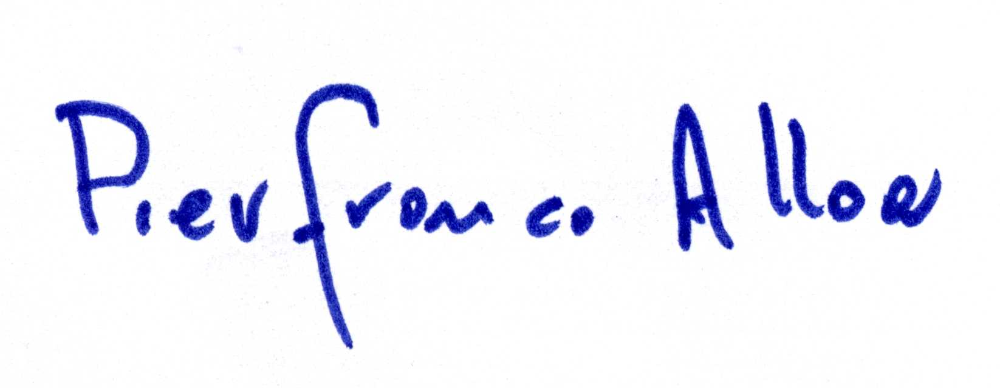

It is not without some bitterness and even anxiety that we, in this early 21st century, find ourselves unwilling witnesses to the erosion of fundamental human and ethical values. Even now, we are still embroiled in, not only an unprecedented economic and financial crisis, but a virulent and alarming moral crisis.
A foundation requested by the Karmapa
At such an unusually difficult juncture in history, the contribution of a spiritual master such as His Holiness the Karmapa Ogyen Trinley Dorje could prove crucial. He had asked Ringu Tulku Rinpoche, his representative in Europe, to set up the Karmapa Foundation Europe and to be its Chairman. Thus it was that Ringu Tulku, with the help of a number of members, founded our organisation in 2010.
As you will see from our Internet site, the Foundation's objectives are both numerous and highly significant. Among other things, we aim to facilitate the Karmapa's coming to Europe, to bring his teachings to a wider audience on our continent and to implement a whole series of initiatives which the Karmapa may wish to promote in the future.
The Foundation has only just launched its activities. If it is to fulfil its mission, it will need to attract a large number of persons of goodwill to support its activities. Our operation, both in Brussels and in other European countries, is in fact to be run on a purely voluntary basis. We now have a small Office in Brussels to coordinate multifarious activities, in agreement with the Members of the Governing Board who reside in different European countries and, in the first place, its Chairman, Ringu Tulku Rinpoche.
The Karmapa's visit to Europe
More and more of us feel it is high time for His Holiness the 17th Karmapa to be allowed to travel to Europe. From the late 1970s, his predecessor came here on several occasions. Since then, a multitude of his students and friends have been longing to see their master on European soil. Now it will be the Foundation's task to help find the best solutions to enable the Karmapa's return among us. Our organisation is not a Dharma centre and will handle no business other than that for which it was set up. The Foundation's job is to do things which it would be difficult for Dharma centres to handle. In other words, its role in relation to those centres will be a supporting one.
It is perhaps a little early to spell this role out in full, yet it is plain that the Foundation can do much to help collect funds and organise the Karmapa's visits to Europe. It will in particular deal with administrative matters and general coordination, while organising expert planning for travel arrangements. It could also act as treasurer in the broader context of such events.
We are at this moment sounding out how to resolve the administrative obstacles in India which still prevent His Holiness from travelling to Europe, where he has long been awaited in so many countries by thousands and thousands of his students and friends.
So far our attempts to find a solution through the Indian authorities in Brussels, on behalf of European students and friends of His Holiness, have unfortunately not borne fruit. But we do not lose hope and we shall persevere in our determination to obtain a just response to this long-standing problem; for it is surely also in India's interest that such a solution be found soon.
Many objectives
The Foundation could also assist with many projects in the sphere of health, education and the environment, as well as with other initiatives which cannot yet be launched for lack of sufficient funds. These are, in short, projects that aim to enhance people's spiritual dimension and to promote a culture grounded in man and not just profit and the materialistic world view.
The Karmapa Foundation Europe arranged for the translation into French and publication of the book Karmapa: 900 Years. We plan in 2014 to arrange for sixteen students and young professional people from eight European countries to travel to India and spend two weeks close to His Holiness the 17th Karmapa, so as to be able to absorb something of his compassion and wisdom and, on their return, to apply this in their daily lives.
Last but not least, the Karmapa Foundation Europe is the legal entity representing His Holiness' interests in Europe. In this capacity it may sometimes be called on to incur considerable expenditures.
My purpose in this message is to appeal to everyone, both in Europe and elsewhere, who may have an interest in our Foundation, to lend their support to the causes we are defending, out of concern for spiritual growth and for the common good. Your support could be financial, via this website for instance, or it could take many other forms, depending on whatever circumstances demand.
Given the huge scope of our task, there can be no question but that we in Europe shall be called upon to work together at several different levels, in grateful collaboration with every single one of our helpers and contributors.
 Pierfranco AlloaSecretary-General
Karmapa Foundation Europe